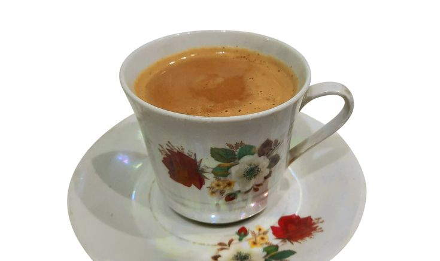

Return to Recipe page
Doodh Patti Chai

A rich milky and creamy variation of Tea also known as Doodh Patti Chai. Chai literally means Tea! :)
Everyone will appreciate a warm cup of Doodh Patti Chai. Growing up this was what my mum used to make and it is absolutely delicious. It is extremely popular in Pakistan/India and for a good reason, trust me try it out!
Ingredients:
- Milk, ideally 1/2 pints
- Whole or ground cardamom
- Brown/white Sugar
- Danedar Tea Leaves
- A sieve
- Optional: a ladle to aerate the Chai
Steps:
- Pour the milk into a pan on medium-high heat
- Add the cardamom, a generous amount of Tea Leaves and a tiny bit of water
- Leave on medium-high heat until boiling
- After boiled, simmer for around 2 minutes and use ladle
- Pour the Chai into a cup using the sieve and Enjoy!